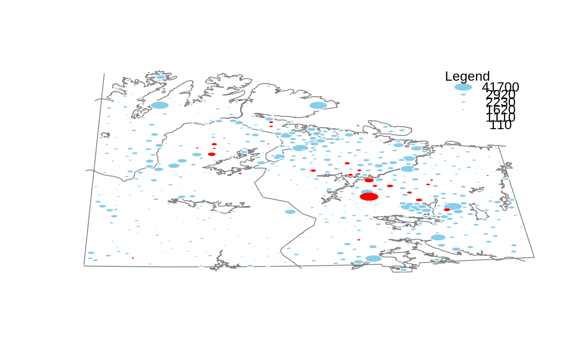
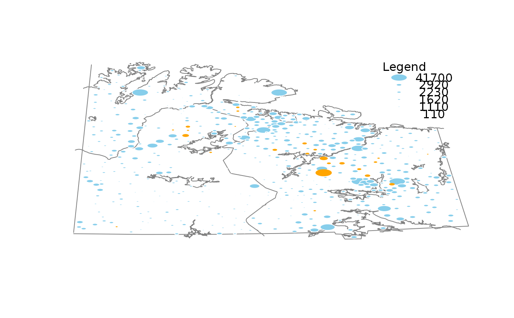

R/growdotMiss.R
growdotMiss.RdMap with dots whose sizes correspond to the values in a certain variable. Observations with missing/imputed values in additional variables are highlighted.
growdotMiss(
x,
coords,
map,
pos = 1,
delimiter = NULL,
selection = c("any", "all"),
log = FALSE,
col = c("skyblue", "red", "skyblue4", "red4", "orange", "orange4"),
border = par("bg"),
alpha = NULL,
scale = NULL,
size = NULL,
exp = c(0, 0.95, 0.05),
col.map = grey(0.5),
legend = TRUE,
legtitle = "Legend",
cex.legtitle = par("cex"),
cex.legtext = par("cex"),
ncircles = 6,
ndigits = 1,
interactive = TRUE,
...
)a vector, matrix or data.frame.
a matrix or data.frame with two columns giving the
spatial coordinates of the observations.
a background map to be passed to bgmap().
a numeric value giving the index of the variable determining the dot sizes.
a character-vector to distinguish between variables and
imputation-indices for imputed variables (therefore, x needs to have
colnames()). If given, it is used to determine the corresponding
imputation-index for any imputed variable (a logical-vector indicating which
values of the variable have been imputed). If such imputation-indices are
found, they are used for highlighting and the colors are adjusted according
to the given colors for imputed variables (see col).
the selection method for highlighting missing/imputed
values in multiple additional variables. Possible values are "any"
(highlighting of missing/imputed values in any of the additional
variables) and "all" (highlighting of missing/imputed values in
all of the additional variables).
a logical indicating whether the variable given by pos
should be log-transformed.
a vector of length six giving the colors to be used in the plot. If only one color is supplied, it is used for the borders of non-highlighted dots and the surface area of highlighted dots. Else if two colors are supplied, they are recycled.
a vector of length four giving the colors to be used for the
borders of the growing dots. Use NA to omit borders.
a numeric value between 0 and 1 giving the level of
transparency of the colors, or NULL. This can be used to prevent
overplotting.
scaling factor of the map.
a vector of length two giving the sizes for the smallest and largest dots.
a vector of length three giving the factors that define the shape of the exponential function (see ‘Details’).
the color to be used for the background map.
a logical indicating whether a legend should be plotted.
the title for the legend.
the character expansion factor to be used for the title of the legend.
the character expansion factor to be used in the legend.
the number of circles displayed in the legend.
the number of digits displayed in the legend. Note that \
this is just a suggestion (see format()).
a logical indicating whether information about certain observations can be displayed interactively (see ‘Details’).
for growdotMiss, further arguments and graphical
parameters to be passed to bgmap(). For bubbleMiss, the
arguments to be passed to growdotMiss.
The smallest dots correspond to the 10\ the 99\ defining the shape of the exponential function. Missings/imputed missings in the variable of interest will be drawn as rectangles.
If interactive=TRUE, detailed information for an observation can be
printed on the console by clicking on the corresponding point. Clicking in
a region that does not contain any points quits the interactive session.
The function was renamed to growdotMiss in version 1.3.
bubbleMiss is a (deprecated) wrapper for growdotMiss for back
compatibility with older versions. However, due to extended functionality,
some of the argument positions have changed.
The code is based on (removed from CRAN) bubbleFIN from package StatDA.
M. Templ, A. Alfons, P. Filzmoser (2012) Exploring incomplete data using visualization tools. Journal of Advances in Data Analysis and Classification, Online first. DOI: 10.1007/s11634-011-0102-y.
data(chorizonDL, package = "VIM")
data(kola.background, package = "VIM")
coo <- chorizonDL[, c("XCOO", "YCOO")]
## for missing values
x <- chorizonDL[, c("Ca","As", "Bi")]
growdotMiss(x, coo, kola.background, border = "white")

#>
#> Click on a point to get more information.
#> To regain use of the VIM GUI and the R console, click in a region that does not contain any points.
#>
## for imputed values
x_imp <- kNN(chorizonDL[,c("Ca","As","Bi" )])
growdotMiss(x_imp, coo, kola.background, delimiter = "_imp", border = "white")

#>
#> Click on a point to get more information.
#> To regain use of the VIM GUI and the R console, click in a region that does not contain any points.
#>